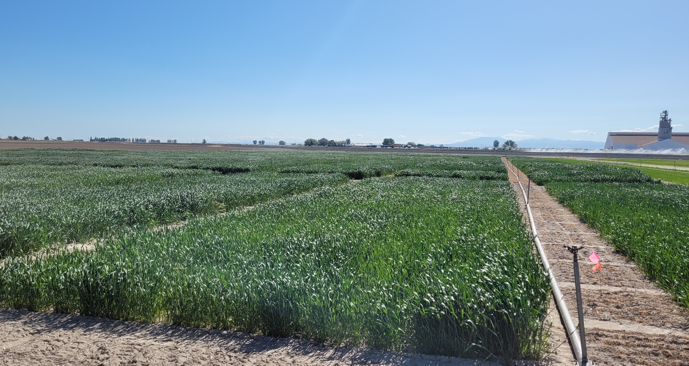

| Zone | Description | GDD | Soil depth | Annual precipitation | What it generally means |
|---|---|---|---|---|---|
| 1 | Cold-moist | <700 | Any | >16 in. | Moisture is generally adequate, but the growing season is cool and relatively short. |
| 2 | Cool-moist | 700-1,000 | Any | >16 in. | Moisture and temperature generally favor annual cereal production where soils and topography allow cultivation. |
| 3 | Cool-deep-moderately dry | 700-1,000 | >40 in. | 14-16 in. | Deep soils usually recharge in most years, allowing annual cropping in most years. Fallow may be useful in drier years. |
| 4 | Cool-shallow-dry | <1,000 | <40 in. | 10-16 in. | Shallow soils usually refill during winter, so summer fallow provides little additional water-storage benefit. |
| 5 | Cool-deep-dry | <1,000 | >40 in. | 10-14 in. | Winter precipitation is often not enough to refill the deep soil profile. Summer fallow can help store water for the following crop. |
| 6 | Hot-very dry | >1,000 | Any | <10 in. | Low precipitation and hot conditions generally make irrigation necessary for dependable crop production. |
2 Wheat in Idaho - Introduction

Image: J PiaskowskiWheat is an important crop throughout the Pacific Northwest and the US. Growers seed nearly 1.2 million acres every year, and yearly cash receipts have averaged $600 million in recent years. This places wheat consistently in the top five for on-farm cash receipts of the crops in Idaho. While wheat is produced across the region, production systems vary greatly due to different climates, soils and availability of irrigation. Wheat production systems in Idaho can be broken down into three major areas: Northern Idaho rainfed production systems, Southern Idaho Dryland production systems and Southern Idaho irrigated production systems.
Northern Idaho Rainfed Wheat Production Systems
Northern Idaho Rainfed Wheat Production Systems are characterized by 12-24 inches of annual precipitation on fields located between 1,000 – 4,000 feet above sea level. The northern Idaho “Mediterranean Climate” experiences typically mild winters and receives almost all its moisture in the fall through spring months with typically extremely dry summer months. Winter wheat is the most frequently planted crop in this region and soft white wheat is the dominant market class grown. The majority of soft white wheat bushels produced in this production region are exported to Pacific Rim countries for use in noodles, crackers and sponge cakes.
Southern Idaho Irrigated Wheat
Production conditions in southern Idaho vary with geography and availability of irrigation, and wheat is often considered a rotation crop with higher value row crops such as potatoes and sugar beets. Western Idaho grain production is part of a diverse irrigated cropping system at lower elevations (2-3,000 feet above sea level). Eastward, the upper elevation production systems at elevations ranging from 5,000 to greater than 6,000 feet are primarily limited to dryland grain production. Along the Snake River Plain in eastern and southern Idaho, the irrigated cropping system rotations include potatoes, sugar beets, alfalfa, and other forage crops. The majority of irrigated winter wheat production is soft white winter and hard red winter. The spring wheat classes include hard red spring, hard white spring and soft white spring wheat. In areas where natural precipitation is less than 10 inches per year, irrigation is critical to successful production. Upper elevation areas receive as much as 18 inches of natural precipitation, where grain can be successfully produced in dryland production.
Southern Idaho Dryland Wheat
Winter wheat is an especially important crop in the dryland cropping areas of southern Idaho. Approximately 125,000 acres are harvested annually, producing over 4 million bushels of grain. Southern Idaho dryland accounts for approximately 20 percent of the total state winter wheat acreage and 10 percent of the total state wheat yield. Most production in this environment is hard red winter wheat, with smaller amounts of soft white winter and hard red spring wheat. Production of hard white winter wheat is negligible at present but may increase in future years.
In addition to the challenges of maintaining profitable farming operations, wheat producers also face the challenge of conserving soil and water resources in this area of rolling landscapes with high wind and water erosion potential. High erosion potential, low crop residue production, and generally low, sporadic precipitation make profitable and sustainable cereal production challenging in this area. The goal of every producer should be to obtain optimum yields that are affordable for both short- and long-term considerations and that maximize the efficient use of available land, management resources, and the environment. This production guide brings together the best available research information on management practices for economic and environmentally sound production of wheat in Idaho.
Agronomic zones
Wheat is grown under very different conditions across Idaho. Precipitation, temperature, elevation, soil depth, and irrigation vary across the state. Even nearby fields can differ in how much water their soils can store or how quickly the crop develops. These differences help explain why a variety or production practice that works well in one area may not perform the same way in another.
Agronomic zones group areas with similar growing conditions rather than following county or state boundaries. In the dryland Pacific Northwest, the zones are based on three main factors: annual precipitation, soil depth, and growing degree days (GDD) [1], [2], [3], [4].
For growers, agronomic zones provide a way to compare growing conditions among locations. The zones describe the general production environment, but they do not replace knowledge of individual fields.
What defines an agronomic zone?
The six agronomic zones
Adapted from Hagerty et al. [1].
The contrast among these zones shows why precipitation and soil depth need to be considered together. The distribution of the agronomic zones across Idaho is shown in Figure 2.1.

What the agronomic zones mean for Idaho
As shown in fig-ag-zones-map, Idaho includes several different agronomic environments rather than a simple north-to-south pattern.
Northern Idaho generally has cooler and wetter wheat-growing conditions than much of southern Idaho. These conditions favor annual cropping, although soil depth, elevation, and seasonal weather can create important differences among locations.
In dryland areas of southern and eastern Idaho, water becomes a stronger limitation. Soil depth is especially important because deeper soils can store more winter moisture for use during the growing season. University of Idaho dryland wheat guidance emphasizes considering stored soil water together with expected growing-season precipitation when estimating crop potential [5].
In many parts of southern Idaho, wheat is grown under irrigation. Because the agronomic-zone system was developed mainly for dryland production, the zones need to be interpreted differently for irrigated fields. The zone describes the natural climate and soil conditions; it does not describe how much irrigation water is available to the crop. A field in a naturally hot and very dry area can still support productive wheat when adequate irrigation is available [6] .
Using agronomic zones on the farm
Agronomic zones can help growers decide whether research results, variety trials, or management recommendations from another location are likely to apply to their own farm. A practice tested on deep soil in a moderately dry area may not work the same way on shallow soil receiving similar precipitation. Likewise, a variety that performs well in a cool, moist area may respond differently under warmer and drier conditions.
A useful question to ask is:
Were these results developed under conditions similar to those on my farm?
The zone map is a regional guide, not a detailed field map. Soil depth, slope, water storage, and other conditions can change over short distances, and a single farm may include more than one agronomic zone.
Growers should use agronomic zones together with what they know about their own soils, stored soil water, irrigation, field history, and current weather. The map shows the regional pattern, but conditions in the field determine how the information should be used.
TipLearn more about agronomic zones:
PNW 354 - Agronomic Zones of the Dryland Pacific Northwest
Christina Hagerty, Kate Fickas and Donald Wysocki, 2019.
- With an annual wheat harvest valued at $2.1 billion, producers in Idaho, Oregon and Washington know the value of farming practices adapted to each region, county and field. Researchers mapped precipitation, soil depth and growing degree day data to divide this important growing region into six geographic zones. These agronomic zones serve as a basis for applying research and management strategies.
PNW 697 - Advances in Dryland Farming in the Inland Pacific Northwest
Georgine Yorgey and Chad Kruger, editors, 2017.
- Farmers make tough decisions all the time — it comes with the territory. When that territory includes the dryland region of the inland Pacific Northwest, decisions can be even more challenging. Fluctuating weather, varying soils and changing pest pressures are just a few of the ongoing challenges that farmers in this region face. However, university-driven research in these production areas can provide guidance. Packed with tools, resources and the most current research, this book supports farmers as they make decisions relating to productivity, resilience and their bottom lines.